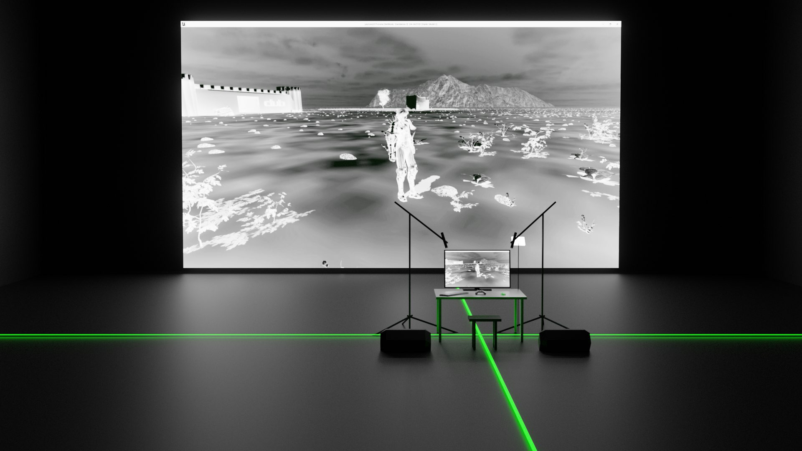

07/06/2025Game
<
Watch Me Crawl

"[a dungeon crawler is] a video game where the gameplay is primarily focused on defeating enemies while exploring a usually randomly generated labyrinthine or dungeon-like environment" -merriam-webster.com
Investigating what a body does while gaming, crawling in a terrifying dungeon, dying and reviving, exposed on stage. "watch me crawl" uses gaming as a performance practice to merge the many media in multimedia. The player on stage controls the character in the game. The game controls the rest.